2.1.1. Reference Architecture¶
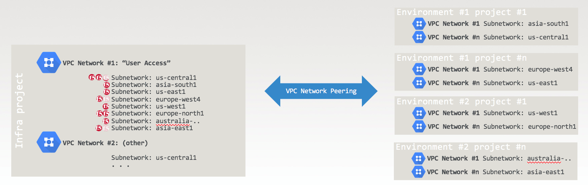 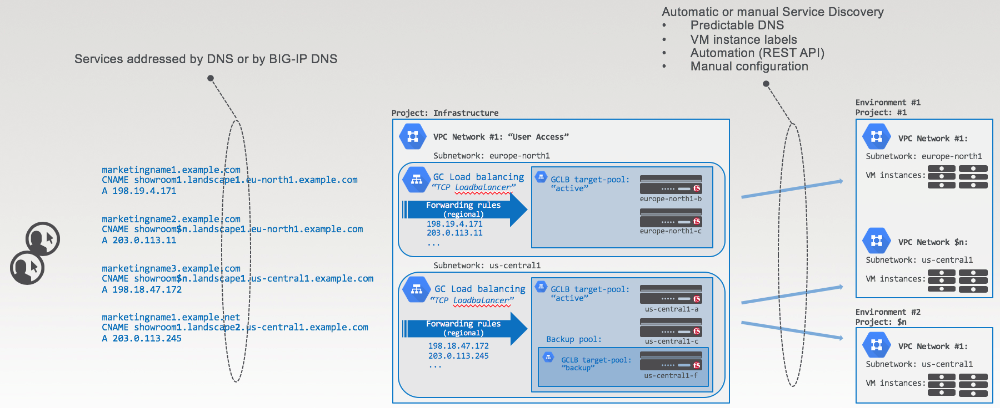{kind=link}
{kind=link}
2.1.1.1. Lab Topology¶
We use a simplified version of the above reference architecture, with one forwarding rule: 35.230.18.56 => target pool of two 3-NIC F5 BIG-IPs. (We’ll also deploy 1-NIC F5 BIG-IP via deployment templates in a lab exercise at the end of this document)
Connect to https://console.cloud.google.com/ as gcpreadonly@gmail.com
Select the project as shown below
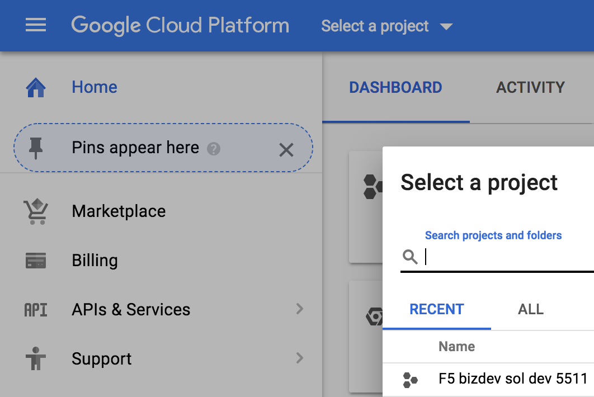{kind=link}
Search “load balancing” and select “Load balancing Network services” as shown below.
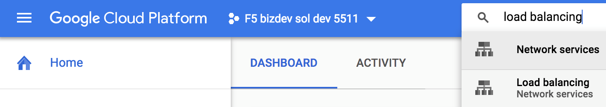{kind=link}
Click on “advanced menu” at the bottom of the screen.
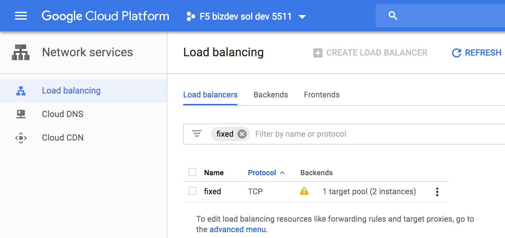{kind=link}
Click on “Forwarding rules” and click on the “fixed” forwarding rule.
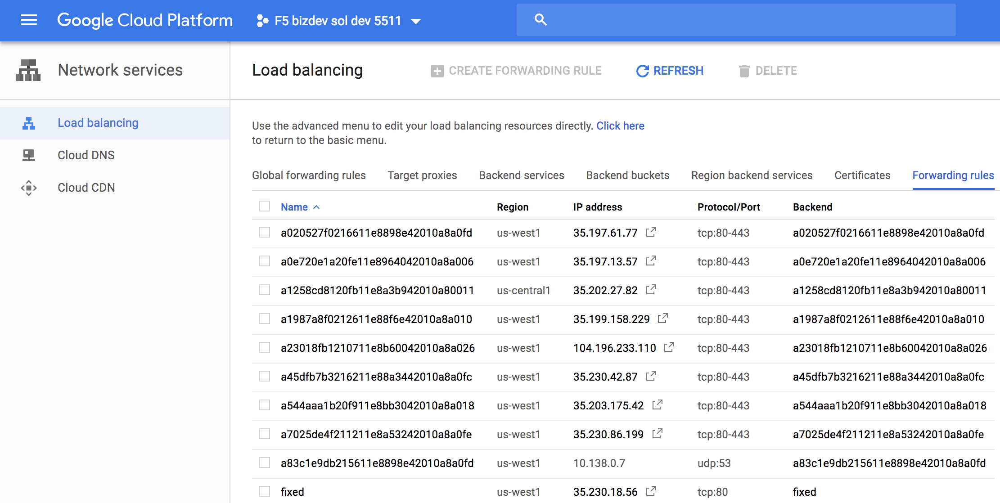{kind=link}
This is our forwarding rule (see below): HTTP traffic to 35.230.18.56 is forwarded to a target pool of F5 BIG-IPs.
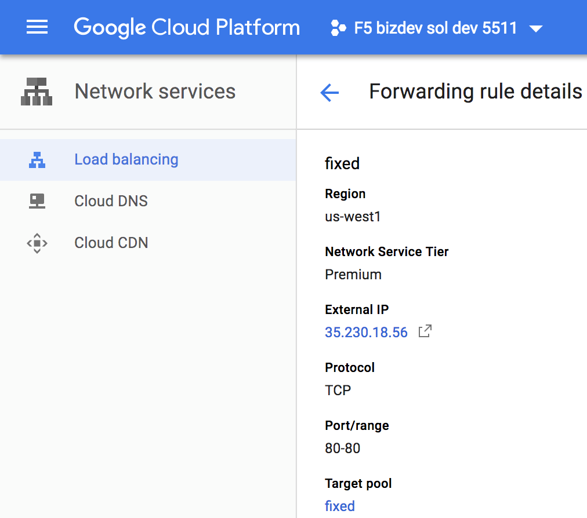{kind=link}
Click on the target pool “fixed” in the above screen to check it contains 2 F5 BIG-IPs.
Note that the target pool references the F5 BIG-IP using their instances names (not their IP addresses).
Note the names of the two F5 BIG-IP instances under “VM instances”
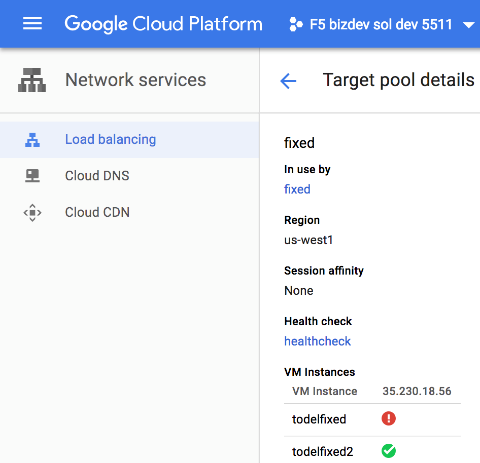{kind=link}
Search “compute engine instances” and select “Instances - Compute Engine” as shown below.
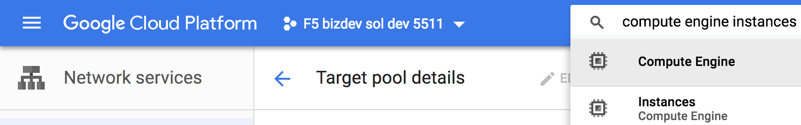{kind=link}
Filter by “fixed” as shown below to get to our two F5 BIG-IP instances.
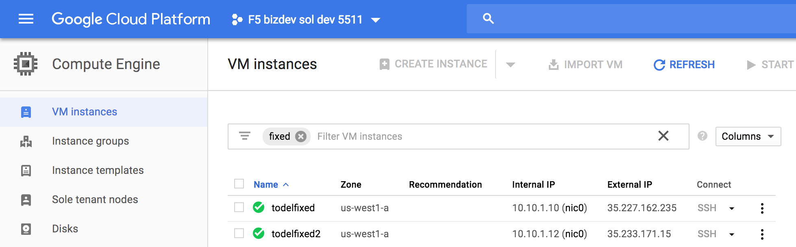{kind=link}
Click on each of the F5 BIG-IP instances above. Check “Network interfaces” at bottom of the screen.
For the first F5 BIG-IP:
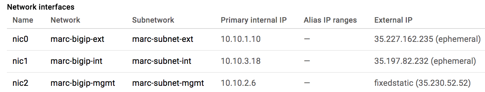{kind=link}
For the second F5 BIG-IP:
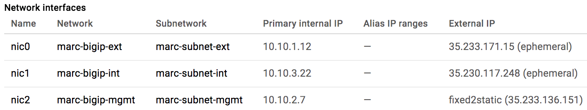{kind=link}
Connect to the F5 BIG-IP management interfaces (Note that the management interface is the last NIC in the screenshots above).
So, connect to https://35.230.52.52 and https://35.233.136.151
Note that both F5 BIG-IPs in the target pool have a virtual server listening to the GCP public IP used by our forwarding rule.
 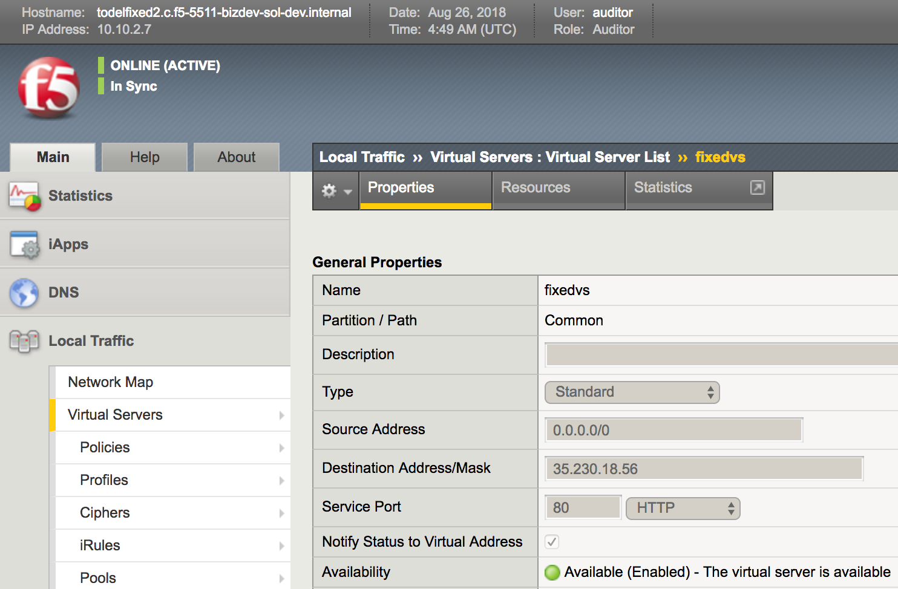
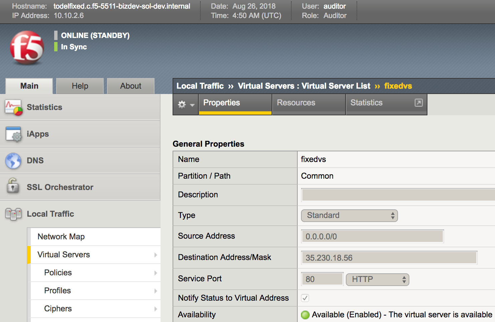
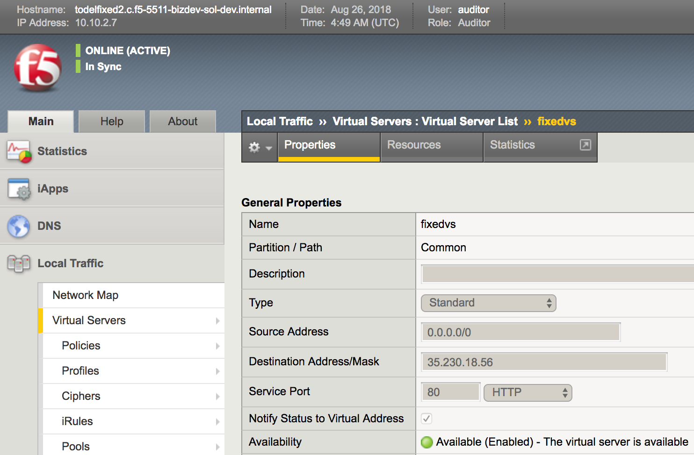
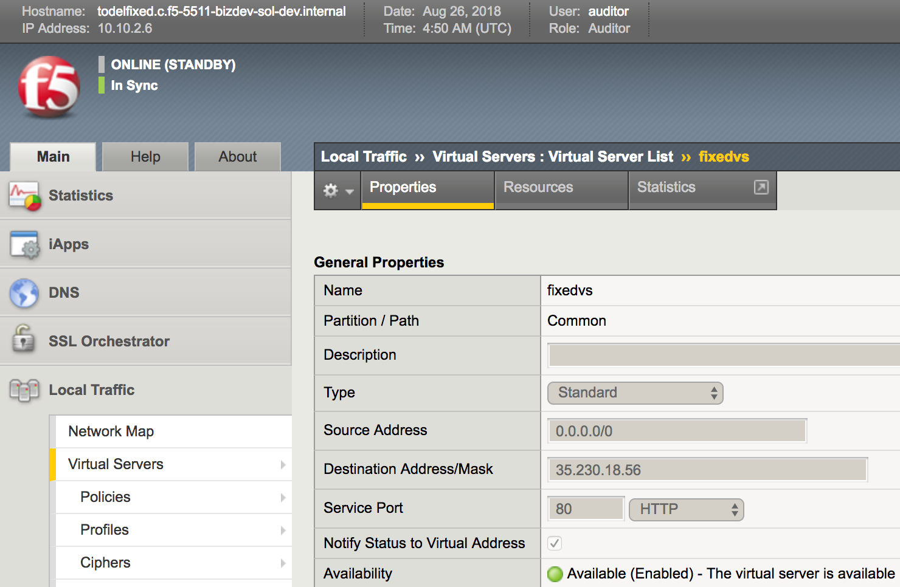
{kind=link}
{kind=link}